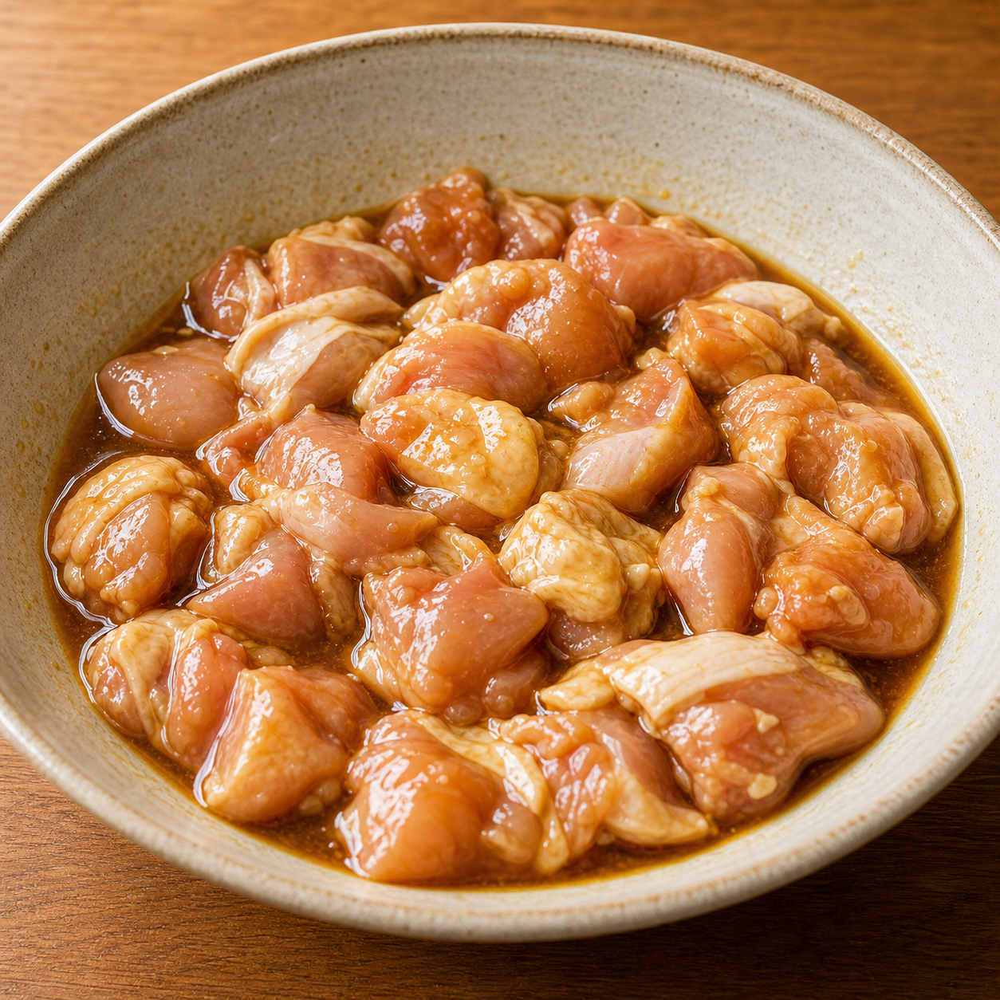

外カリ中ジューシー、タルタルで一気にご飯
しっとり甘だれチキン南蛮
仕事終わりにガツンと食べたい夜揚げたての鶏に甘だれをまとわせる。
まろやかなタルタルで包む。
疲れた日でも手が止まらない、ご褒美系チキン南蛮です。
時間
25分
難易度
★★★☆☆
カロリー
1650 kcal
P:
132g
たんぱく質
F:
136g
脂質
C:
28g
炭水化物
01
食べる理由
ハマる人
- 揚げ物とタルタルの濃い満足感を求めてる人
- 白米をおかずで一気に進めたい人
おすすめのシーン
- 仕事終わりにガツンと食べたい夜
- 家でちょっと贅沢したいとき
- ビールとセットでキメたい日
03
材料
男性1人分
メイン
- 鶏もも肉
- 200g
- 小麦粉
- 適量
- 片栗粉
- 適量
- 卵（衣用）
- 1個
漬けダレ
- 醤油
- 大さじ2
- 酒
- 大さじ2
- みりん
- 大さじ1
- ごま油
- 小さじ1
タルタル
- 卵
- 2個
- 玉ねぎ or らっきょう
- 30g
- バター
- 5g
- 塩・胡椒
- 少々
甘酢ダレ
- 漬けダレ
- 20ml
- バルサミコ酢
- 大さじ2
- 白だし
- 大さじ2
- みりん・酒
- 各大さじ1
- 水
- 50ml
04
作り方
05
まとめ
- 鶏肉は下味でしっとりさせる。
- 二度揚げで外側をカリッとさせる。
- 甘酢とタルタルでご飯が進む味にする。